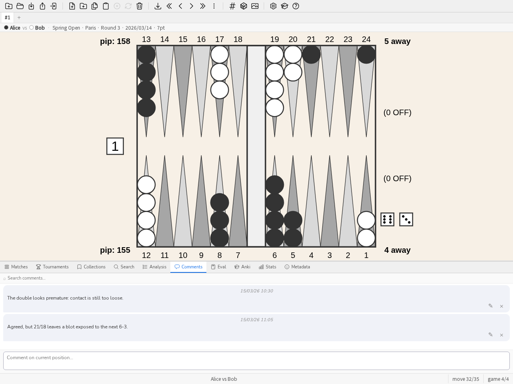

2. Οδηγός χρήσης
Αυτός ο οδηγός είναι μια πρακτική εισαγωγή στο blunderDB για γρήγορη εξοικείωση. Τέσσερα πλήρη εκπαιδευτικά μαθήματα καλύπτουν τις πιο συνηθισμένες χρήσεις· το υπόλοιπο του οδηγού παραμένει κατάλογος αναφοράς, κίνηση προς κίνηση, για συμβουλή όποτε χρειάζεται.
2.1. Πλήρη εκπαιδευτικά μαθήματα
2.1.1. Η πρώτη μου εισαγωγή
Αυτό το μάθημα ξεκινά από ένα αρχείο ματς eXtreme Gammon (.xg) και καταλήγει στη λίστα των θέσεων όπου χάσατε τα περισσότερα.
Δημιουργήστε μια βάση. Κουμπί «Νέα βάση δεδομένων» στη γραμμή εργαλείων (ή CTRL-N), επιλέξτε μια τοποθεσία και ένα όνομα· η επέκταση
.dbπροστίθεται αυτόματα.Εισαγάγετε το ματς. Σύρετε και αποθέστε το αρχείο
.xgστο παράθυρο του blunderDB (ή CTRL-I, και μετά επιλέξτε το). Το blunderDB εντοπίζει τη μορφή, εισάγει τις θέσεις και την ανάλυση που υπάρχει ήδη στο αρχείο XG (κινήσεις, αποφάσεις κύβου, σημάνσεις), και εμφανίζει τον πίνακα ματς μόλις η εισαγωγή πετύχει.Επανεξετάστε το ματς. Διπλό κλικ στη γραμμή του ματς (ή επιλογή του και πάτημα ENTER) ανοίγει την ανασκόπηση στην τελευταία θέση που επισκεφθήκατε. Τα πλήκτρα ΑΡΙΣΤΕΡΑ/ΔΕΞΙΑ (ή j/k) διατρέχουν τις κινήσεις· PageUp/PageDown αλλάζουν παρτίδα.
Διαβάστε την ανάλυση. Το CTRL-L εμφανίζει τον πίνακα Ανάλυσης: τις καλύτερες κινήσεις, την ισοτιμία τους και το σφάλμα της κίνησης που παίχτηκε (τονισμένη στον πίνακα). Σε μια απόφαση κύβου, το ίδιο πλήκτρο εμφανίζει τον πίνακα ισοτιμιών κύβου και την κρίση.

Ο πίνακας Ανάλυσης κατά την ανασκόπηση ενός ματς: η κίνηση που παίχτηκε τονίζεται στον πίνακα υποψήφιων κινήσεων.
Βρείτε τα μεγαλύτερα σφάλματα. Από οπουδήποτε, η εντολή
bl(ήblunders, ΔΙΑΣΤΗΜΑ για να ανοίξετε τη γραμμή εντολών) φορτώνει απευθείας στον πίνακα ανάλυσης τις θέσεις όπου το σφάλμα ήταν πιο δαπανηρό — δεν χρειάζεται να κατασκευάσετε αναζήτηση με το χέρι για ένα πρώτο πέρασμα σε μια εισαγωγή. Δείτε Πίνακας Stats για να εξειδικεύσετε αυτή την επιλογή ανά παίκτη ή ανά εύρος ημερομηνιών μόλις εισαχθούν πολλά ματς.
2.1.2. Μελέτη ενός ματς
Μόλις εισαχθούν πολλά ματς, αυτό το μάθημα αναλύει τη μελέτη ενός συγκεκριμένου ματς — πέρα από την απλή διαδρομή του προηγούμενου μαθήματος.
Ανοίξτε τον πίνακα ματς (CTRL-Tab). Παραθέτει όλα τα εισαγμένα ματς, ταξινομήσιμα κατά στήλη (παίκτης, ημερομηνία, μήκος, τουρνουά, PR).

Ο πίνακας ματς: ταξινομήσιμη λίστα, PR και κόστος MWC ανά ματς.
Ανοίξτε την ανασκόπηση με διπλό κλικ στη γραμμή, ή επιλέγοντάς την και πατώντας ENTER. Η μπάρα πληροφοριών πάνω από το ταμπλό υπενθυμίζει τους δύο παίκτες, το τουρνουά και το σκορ.
Εναλλαγή κίνησης πουλιών / απόφασης κύβου με το πλήκτρο d στην ίδια θέση όταν και οι δύο αναλύσεις είναι διαθέσιμες (η μία από τις δύο μπορεί να λείπει ανάλογα με το τι περιείχε το εισαγμένο αρχείο).

Μια απόφαση κύβου στον πίνακα Ανάλυσης: ισοτιμίες χρημάτων, σφάλμα κάθε επιλογής, καλύτερη απόφαση.
Σχολιάστε αυτό που παρατηρείτε: το CTRL-P ανοίγει τον πίνακα Σχολίων στη θέση που εμφανίζεται — χρήσιμο για να σημειώσετε γιατί μια κίνηση είναι λάθος, όχι μόνο ότι είναι.

Ο πίνακας Σχολίων: ένα νήμα ανταλλαγών προσαρτημένο στη θέση που εμφανίζεται.
Σημάνετε μια θέση για να την ξαναπαίξετε αργότερα: ΔΙΑΣΤΗΜΑ για να ανοίξετε τη γραμμή εντολών,
#ακολουθούμενο από μια λέξη-κλειδί (για παράδειγμα#blitz), ENTER. Δείτε Επεξεργασία θέσης για να επεξεργαστείτε απευθείας τη θέση αν η κίνηση που παίχτηκε δεν είναι αυτή που θέλετε να μελετήσετε.Εξέλθετε από τη λειτουργία ματς με την εντολή
m: η βιβλιοθήκη επανέρχεται στην προηγούμενη κατάστασή της, η τελευταία θέση που επισκεφθήκατε στο ματς απομνημονεύεται για την επόμενη επίσκεψη.
{kind=link}
2.1.3. Μια συνεδρία Anki
Ο πίνακας Anki μετατρέπει μια συλλογή ή μια αναζήτηση σε τράπουλα καρτών προς επανάληψη σύμφωνα με τον αλγόριθμο FSRS (κατανεμημένη επανάληψη).
Συνθέστε την τράπουλα. Δύο πιθανά σημεία εκκίνησης: μια χειροεπιλεγμένη συλλογή θέσεων, ή μια αναζήτηση (CTRL-F) — για παράδειγμα όλες οι αποφάσεις κύβου που έχουν σημανθεί ως σφάλματα. Η εντολή
bl 30(30 χειρότερα σφάλματα) προσφέρει ένα καλό σημείο εκκίνησης για μια πρώτη τράπουλα.Δημιουργήστε την τράπουλα. Ανοίξτε τον πίνακα Anki (CTRL-K), κουμπί «New Deck», ονομάστε την τράπουλα· συγχρονίζεται με την επιλεγμένη αναζήτηση ή συλλογή.

Ο πίνακας Anki: μία τράπουλα ανά γραμμή, συνολικές κάρτες, νέες και οφειλόμενες σήμερα.
Επαναλάβετε (Study): κάθε κάρτα εμφανίζει μια θέση, διατυπώνετε την απάντησή σας νοερά, αποκαλύπτετε τη λύση (το ταμπλό, την ανάλυση και τυχόν σχόλιο), και στη συνέχεια βαθμολογείτε την εκτίμησή σας από 1 (αστοχία) έως 4 (εύκολο). Το FSRS χρονοπρογραμματίζει ανάλογα την επόμενη εμφάνιση. Τίποτα δεν σας υποχρεώνει να αποκαλύψετε την απάντηση για να συνεχίσετε αν είστε σίγουροι για τον εαυτό σας.
Ζεσταθείτε χωρίς να διαταράξετε το πρόγραμμα (Cram): παρουσιάζει τυχαίες θέσεις από την τράπουλα χωρίς να αγγίζει το πρόγραμμα FSRS — χρήσιμο πριν από τουρνουά, ή για εντατική επανάληψη χωρίς να μετατοπίζονται οι προθεσμίες των άλλων καρτών.
Δείτε Πίνακας Anki για τη λεπτομέρεια των παραμέτρων (περιορισμός της συνεδρίας, στόχος ποσοστού διατήρησης, επαναφορά μιας τράπουλας).
2.1.4. Ανάπτυξη της λειτουργίας διακομιστή πίσω από έναν proxy
Η λειτουργία διακομιστή (blunderdb serve) εκθέτει τον κινητήρα του blunderDB μέσω HTTP + JSON. Δεν πιστοποιεί κανέναν (ADR-0005): εμπιστεύεται την κεφαλίδα X-Tenant-ID ακριβώς όπως τη λαμβάνει, και επομένως πρέπει πάντα να βρίσκεται πίσω από έναν αντίστροφο διαμεσολαβητή που, αυτός, πιστοποιεί και ορίζει την κεφαλίδα αυτή. Αυτό το μάθημα αναπτύσσει τη δημοσιευμένη εικόνα πίσω από έναν ελάχιστο nginx, με πιστοποίηση HTTP Basic ενός μόνο ενοίκου — το απλούστερο σημείο εκκίνησης, προς προσαρμογή (SSO, πιστοποιητικά πελάτη, αντιστοίχιση πολλαπλών ενοίκων ανά χρήστη) ανάλογα με το πλαίσιό σας.
Εκκινήστε τον δαίμονα, περιορισμένο στο
127.0.0.1(ποτέ εκτεθειμένο απευθείας):docker run --rm -p 127.0.0.1:8080:8080 -v blunderdb-data:/data \ -e BLUNDERDB_BACKEND=sqlite -e BLUNDERDB_DSN=/data/blunderdb.db \ ghcr.io/kevung/blunderdb-serve:0.35.0
Δημιουργήστε ένα αρχείο κωδικών για την πιστοποίηση Basic:
htpasswd -c /etc/nginx/blunderdb.htpasswd alice
Ρυθμίστε το nginx ώστε να πιστοποιεί και έπειτα να αναμεταδίδει, ορίζοντας το ίδιο το
X-Tenant-ID— ποτέ αυτό που στέλνει ο πελάτης:server { listen 443 ssl; server_name blunderdb.exemple.org; location /v1/ { auth_basic "blunderDB"; auth_basic_user_file /etc/nginx/blunderdb.htpasswd; proxy_pass http://127.0.0.1:8080; proxy_set_header X-Tenant-ID "1"; } }
Ελέγξτε με την υποεντολή υγείας, που δεν περνά μέσα από τον proxy:
docker exec <container> blunderdb healthcheck
Δείτε Λειτουργία χωρίς γραφικό περιβάλλον (διακομιστής) για την πλήρη επιφάνεια (διαδρομές, backend PostgreSQL πολλαπλών ενοίκων με Row-Level Security, μετάβαση από SQLite) και τη δημοσιευμένη εικόνα Docker.
2.3. Σενάριο επίδειξης (3 λεπτά)
Για την παρουσίαση του blunderDB χωρίς προσωπική βάση δεδομένων, η εντολή demo φορτώνει μια βάση δεδομένων παραδείγματος (φανταστικές θέσεις και ματς). Το ακόλουθο σενάριο διαρκεί τρία λεπτά:
0:00 — Η
demoστη γραμμή εντολών (ή το αντίστοιχο κουμπί της γραμμής εργαλείων) φορτώνει τη βάση δεδομένων παραδείγματος. Εμφανίζεται ο πίνακας ματς.0:30 — Ανοίξτε ένα ματς (διπλό κλικ), διατρέξτε λίγες κινήσεις με τα βέλη, δείξτε τον πίνακα Ανάλυσης (CTRL-L) σε μια κίνηση που παίχτηκε με ορατό σφάλμα.
1:30 — Εντολή
bl: η προβολή μεταβαίνει απευθείας στα χειρότερα σφάλματα της βάσης δεδομένων, σε όλες τις θέσεις.2:15 — Πίνακας Anki (CTRL-K): δημιουργήστε μια τράπουλα από αυτές τις θέσεις, εκκινήστε μια κάρτα σε Study για να δείξετε τον κύκλο ερώτηση/απάντηση/βαθμολόγηση.
2:45 — Επιστροφή στον πίνακα Stats (CTRL-D), καρτέλα Dashboard, για να δείξετε πού φαίνεται αυτή η δουλειά με τον καιρό.
2.4. Δημιουργία νέας βάσης δεδομένων
Για να δημιουργήσετε μια νέα βάση δεδομένων, κάντε κλικ στη γραμμή εργαλείων στο κουμπί «Νέα βάση δεδομένων». Επιλέξτε διαδρομή αποθήκευσης και όνομα και κάντε κλικ στο «Save».
Σημείωση
Η επέκταση αρχείου για τις βάσεις δεδομένων blunderDB είναι .db.
Πρακτική συμβουλή
Συντόμευση πληκτρολογίου: CTRL-N. Εντολή: n
2.5. Άνοιγμα υπάρχουσας βάσης δεδομένων
Για να φορτώσετε μια υπάρχουσα βάση δεδομένων, κάντε κλικ στη γραμμή εργαλείων στο κουμπί «Άνοιγμα βάσης δεδομένων». Μεταβείτε στη διαδρομή όπου βρίσκεται η βάση, επιλέξτε το αρχείο .db και κάντε κλικ στο «Open».
Πρακτική συμβουλή
Συντόμευση πληκτρολογίου: CTRL-O. Εντολή: o
2.6. Εισαγωγή και συγχώνευση βάσης δεδομένων
Για να εισαγάγετε και να συγχωνεύσετε μια άλλη βάση blunderDB στη βάση που είναι ανοικτή, κάντε κλικ στη γραμμή εργαλείων στο κουμπί «Εισαγωγή βάσης δεδομένων». Επιλέξτε το αρχείο .db προς εισαγωγή και κάντε κλικ στο «Open».
Το blunderDB θα συγχωνεύσει έξυπνα τις δύο βάσεις δεδομένων:
Οι θέσεις που δεν υπάρχουν στην τρέχουσα βάση δεδομένων θα προστεθούν μαζί με τις αναλύσεις και τα σχόλιά τους.
Οι θέσεις που υπάρχουν ήδη θα ενημερωθούν: οι αναλύσεις θα συμπληρωθούν αν λείπουν, και τα σχόλια θα συγχωνευθούν (προσθήκη νέων σχολίων χωρίς αναπαραγωγή των υπαρχόντων).
Ένα μήνυμα θα συνοψίσει τον αριθμό των θέσεων που προστέθηκαν, συγχωνεύθηκαν και αγνοήθηκαν.
Σημείωση
Η εισαγωγή απαιτεί και οι δύο βάσεις δεδομένων να έχουν συμβατές εκδόσεις σχήματος. Είναι δυνατή η εισαγωγή μιας βάσης δεδομένων με χαμηλότερη ή ίση έκδοση σε μια βάση δεδομένων με υψηλότερη έκδοση.
Προσοχή
Η λειτουργία εισαγωγής τροποποιεί αμέσως τη βάση δεδομένων που είναι ανοιχτή αυτή τη στιγμή. Συνιστάται να δημιουργήσετε ένα αντίγραφο ασφαλείας πριν από την εισαγωγή μιας άλλης βάσης δεδομένων.
2.7. Επεξεργασία θέσης
Για να επεξεργαστείτε μια θέση, πατήστε το πλήκτρο TAB για να ανοίξετε το πλαίσιο αναζήτησης και τον επεξεργαστή θέσης. Επεξεργαστείτε τη θέση με το ποντίκι:
κάντε κλικ στα σημεία για να προσθέσετε πούλια. Το αριστερό κλικ αποδίδει τα πούλια στον παίκτη 1. Το δεξί κλικ αποδίδει τα πούλια στον παίκτη 2. Για να εισαγάγετε ένα φράγμα, κάντε κλικ στο σημείο εκκίνησης, κρατήστε πατημένο το κουμπί και αφήστε το στο σημείο άφιξης. Κάντε κλικ στην μπάρα για να τοποθετήσετε πούλια στην μπάρα.
για να καθαρίσετε τη θέση, κάντε διπλό κλικ σε μια κενή περιοχή έξω από το ταμπλό ή πατήστε το πλήκτρο BACKSPACE.
για να στείλετε τον κύβο στον παίκτη 1, κάντε αριστερό κλικ στον κύβο. Για να στείλετε τον κύβο στον παίκτη 2, κάντε δεξί κλικ στον κύβο.
για να υποδείξετε τον παίκτη που έχει τη σειρά, κάντε κλικ στην προβλεπόμενη περιοχή των ζαριών.
για να επεξεργαστείτε τα ζάρια, κάντε αριστερό κλικ για να αυξήσετε την τιμή ενός ζαριού, δεξί κλικ για να μειώσετε την τιμή ενός ζαριού. Αν οι όψεις των ζαριών είναι κενές, σημαίνει ότι η θέση είναι μια απόφαση κύβου.
για να επεξεργαστείτε το σκορ των παικτών, κάντε αριστερό κλικ για να αυξήσετε το σκορ, δεξί κλικ για να μειώσετε το σκορ.
Πρακτική συμβουλή
Η εισαγωγή της θέσης με το ποντίκι για τα πούλια γίνεται με τον ίδιο τρόπο όπως στο XG.
2.8. Προσθήκη θέσης στη βάση δεδομένων
Μετά την επεξεργασία της θέσης, το πλαίσιο αναζήτησης είναι ανοιχτό.
Για να αποθηκεύσετε τη θέση που λάβατε προηγουμένως, πατήστε CTRL-S ή κάντε κλικ στο κουμπί «Save Position» στη γραμμή εργαλείων.
Πρακτική συμβουλή
Ανοίξτε τη γραμμή εντολών και εκτελέστε: w
2.9. Προσθήκη ετικέτας σε μια θέση
Για να προσθέσετε μια ετικέτα toto στην τρέχουσα θέση, ανοίξτε τη γραμμή εντολών πατώντας SPACE, πληκτρολογήστε #toto και επιβεβαιώστε την εντολή πατώντας ENTER.
2.10. Διαγραφή θέσης
Για να διαγράψετε την τρέχουσα θέση από τη βάση δεδομένων, πατήστε Del ή κάντε κλικ στο κουμπί «Delete Position» στη γραμμή εργαλείων.
Πρακτική συμβουλή
Στη γραμμή εντολών, εκτελέστε d.
Προσοχή
Η διαγραφή της θέσης είναι οριστική και δεν απαιτεί καμία επιβεβαίωση από τον χρήστη.
2.11. Εισαγωγή θέσης από το XG
Για να εισαγάγετε μια θέση απευθείας από το XG,
εμφανίστε στο XG τη θέση προς εισαγωγή και πατήστε CTRL-C,
ανοίξτε το blunderDB και πατήστε CTRL-V.
Σημείωση
Η αυτόματη επικόλληση εντοπίζει τη μορφή της πηγής (XG, GNUbg, BGBlitz).
2.12. Εισαγωγή αγώνα
Το blunderDB μπορεί να εισαγάγει αγώνες από διάφορες πηγές.
Υποστηριζόμενες μορφές:
eXtreme Gammon (XG): αρχεία .xg και .xgp (θέσεις)
GNUbg: αρχεία .sgf
Jellyfish: αρχεία .mat και .txt
BGBlitz: αρχεία .bgf και .txt
Για να εισαγάγετε ένα ή περισσότερα αρχεία αγώνων:
Πατήστε CTRL-I ή κάντε κλικ στο κουμπί «Import» στη γραμμή εργαλείων.
Επιλέξτε ένα ή περισσότερα αρχεία προς εισαγωγή.
Το blunderDB εντοπίζει αυτόματα τη μορφή και εισάγει τον αγώνα.
Ένα παράθυρο προόδου εμφανίζει τον αριθμό των αρχείων που εισήχθησαν, απέτυχαν και παραλείφθηκαν (διπλότυπα).
Πρακτική συμβουλή
Εντολή: i
Σημείωση
Το blunderDB εντοπίζει αυτόματα τα διπλότυπα και αποτρέπει την εισαγωγή ενός αγώνα που υπάρχει ήδη στη βάση δεδομένων.
2.13. Εισαγωγή φακέλου αγώνων
Για να εισαγάγετε αναδρομικά όλα τα αρχεία αγώνων που περιέχονται σε έναν φάκελο και τους υποφακέλους του:
Πατήστε CTRL-SHIFT-F ή κάντε κλικ στο αντίστοιχο κουμπί στη γραμμή εργαλείων.
Επιλέξτε τον φάκελο που περιέχει τα αρχεία αγώνων.
Το blunderDB συλλέγει και εισάγει αυτόματα όλα τα αναγνωρισμένα αρχεία (.xg, .xgp, .sgf, .mat, .txt, .bgf).
2.14. Μεταφορά και απόθεση
Το blunderDB υποστηρίζει τη μεταφορά και απόθεση. Μπορείτε να μεταφέρετε και να αποθέσετε στο παράθυρο του blunderDB:
αρχεία αγώνων ή θέσεων (.xg, .xgp, .sgf, .mat, .txt, .bgf) για να τα εισαγάγετε,
αρχεία βάσης δεδομένων (.db) για να τα ανοίξετε ή να τα συγχωνεύσετε με την τρέχουσα βάση δεδομένων,
φακέλους για να εισαγάγετε αναδρομικά όλα τα αρχεία που περιέχουν.
2.16. Διαχείριση του πλαισίου αγώνων
Το πλαίσιο των αγώνων (CTRL-Tab) σας επιτρέπει να:
παραθέσετε όλους τους εισαγόμενους αγώνες (ταξινομημένους από τον πιο πρόσφατο στον παλαιότερο),
ταξινομήσετε τους αγώνες κατά στήλη (παίκτης 1, παίκτης 2, ημερομηνία, διάρκεια αγώνα, τουρνουά),
επεξεργαστείτε τα ονόματα των παικτών ή την ημερομηνία κάνοντας διπλό κλικ στα πεδία,
εναλλάξετε τους παίκτες 1 και 2 χρησιμοποιώντας το κουμπί εναλλαγής,
αναθέσετε έναν αγώνα σε ένα τουρνουά,
διαγράψετε έναν αγώνα χρησιμοποιώντας το πλήκτρο Del.
2.17. Διαχείριση συλλογών
Οι συλλογές σας επιτρέπουν να οργανώνετε θέσεις σε προσαρμοσμένες ομάδες. Για να αποκτήσετε πρόσβαση στο πλαίσιο των συλλογών, πατήστε CTRL-B.
Δημιουργία συλλογής:
Ανοίξτε το πλαίσιο των συλλογών (CTRL-B).
Εισαγάγετε το όνομα της νέας συλλογής και κάντε κλικ στο «Add».
Προσθήκη θέσεων σε μια συλλογή:
Επιλέξτε τις επιθυμητές θέσεις.
Προσθέστε τες στη συλλογή από το πλαίσιο των συλλογών.
Περιήγηση σε μια συλλογή:
Κάντε διπλό κλικ σε μια συλλογή για να περιηγηθείτε στις θέσεις της. Η σειρά των συλλογών και των θέσεων μπορεί να αλλάξει με μεταφορά και απόθεση.
Πρακτική συμβουλή
Εντολή: coll
2.18. Διαχείριση τουρνουά
Τα τουρνουά σας επιτρέπουν να οργανώνετε τους εισαγόμενους αγώνες ανά εκδήλωση. Για να αποκτήσετε πρόσβαση στο πλαίσιο των τουρνουά, πατήστε CTRL-Y.
Δημιουργία τουρνουά:
Ανοίξτε το πλαίσιο των τουρνουά (CTRL-Y).
Κάντε κλικ στο «Add» και εισαγάγετε το όνομα του τουρνουά.
Ανάθεση αγώνα σε ένα τουρνουά:
Από το πλαίσιο των αγώνων (CTRL-Tab), χρησιμοποιήστε το αναπτυσσόμενο μενού της στήλης τουρνουά για να αναθέσετε έναν αγώνα.
2.19. Εμφάνιση στατιστικών επιδόσεων
Το πλαίσιο Stats σας επιτρέπει να προβάλλετε τους δείκτες επιδόσεών σας (PR και κόστος MWC) από τις εισαγόμενες θέσεις.
Πατήστε CTRL-D ή κάντε κλικ στην καρτέλα Stats στο κάτω πλαίσιο.
Χρησιμοποιήστε τη γραμμή φίλτρου για να περιορίσετε την ανάλυση ανά παίκτη, τουρνουά, εύρος ημερομηνιών, τύπο απόφασης ή διάρκεια αγώνα.
Κάντε κλικ σε έναν δείκτη για να μεταβείτε απευθείας στις αντίστοιχες θέσεις.
2.20. Αξιολόγηση μιας θέσης (πίνακας Eval)
Ο πίνακας Eval αξιολογεί οποιαδήποτε θέση — όχι μόνο έναν αγώνα δρόμου. Σε μια καθαρή θέση bearoff, υπολογίζει το EPC (Effective Pip Count) και τα άλλα στατιστικά bearoff· σε οποιαδήποτε άλλη θέση, ο ενσωματωμένος αξιολογητής gammonNet παρέχει τις υποψήφιες κινήσεις ή την απόφαση κύβου, χωρίς σύνδεση, χωρίς XG ή GNUbg.

Ο πίνακας Eval: πιθανότητες νίκης/γκάμον/μπάγκαμον, ισοτιμία και σφάλμα κάθε υποψήφιας κίνησης, υπολογισμένα από το gammonNet.
Πατήστε CTRL-E, κάντε κλικ στην καρτέλα Eval στον κάτω πίνακα, ή εκτελέστε την εντολή
epc: ο πίνακας ανοίγει με άδειο ταμπλό, έτοιμο για επεξεργασία.Για να αξιολογήσετε τη θέση που ήδη εμφανίζεται (μια θέση από τη βιβλιοθήκη, ή αυτή ενός ματς υπό ανασκόπηση) αντί για άδειο ταμπλό, δεξί κλικ στο ταμπλό και έπειτα «Evaluate this position» — η εμφανιζόμενη θέση αποστέλλεται ως έχει στον πίνακα Eval.
Ολόκληρο το ταμπλό επεξεργάζεται με κλικ ή πληκτρολόγιο: πούλια, ζάρια, σκορ, θέση του κύβου, παίκτης στη σειρά. Η επεξεργασία μόνο των πουλιών του jan (τελευταία 6 σημεία) και στις δύο πλευρές τοποθετεί τη θέση σε καθεστώς bearoff.
Τα αποτελέσματα εμφανίζονται σε πραγματικό χρόνο: σε καθαρό bearoff, EPC, μέσος αριθμός ζαριών, τυπική απόκλιση, pip count και wastage, η πιθανότητα νίκης του παίκτη στη σειρά και, στον ακριβή τομέα, η κρίση κύβου χρημάτων· σε οποιαδήποτε άλλη θέση με ριγμένα ζάρια, οι υποψήφιες κινήσεις ταξινομημένες κατά ισοτιμία· χωρίς ζάρια, η απόφαση κύβου. Δείτε την ενότητα «Μεθοδολογία και υποθέσεις του πίνακα Eval» του εγχειριδίου.
Για να εξασκηθείτε στην εκτίμηση αυτών των τιμών, επιλέξτε το πλαίσιο Πρόκληση: τα αποτελέσματα αποκρύπτονται σε κάθε τροποποίηση και αποκαλύπτονται ζώνη προς ζώνη, με ένα κλικ.
Σημείωση
Ο πίνακας λειτουργεί και για τους δύο παίκτες ταυτόχρονα.
2.21. Εμφάνιση της ανάλυσης μιας θέσης που εισήχθη από το XG
Αν μια θέση που αναλύθηκε από το XG, το GNUbg ή το BGBlitz έχει εισαχθεί στο blunderDB, η ανάλυση μπορεί να εμφανιστεί πατώντας CTRL-L.
Αν η θέση αντιστοιχεί σε μια απόφαση κίνησης πουλιών, οι πέντε καλύτερες κινήσεις εμφανίζονται σε ξεχωριστές γραμμές. Για κάθε γραμμή, οι πληροφορίες που παρέχονται είναι με αυτή τη σειρά: η σχετική κίνηση πουλιού, η κανονικοποιημένη ισοδυναμία (equity), το σφάλμα ισοδυναμίας της κίνησης, οι πιθανότητες νίκης, gammon και backgammon του παίκτη, οι πιθανότητες νίκης, gammon και backgammon του αντιπάλου, και το επίπεδο ανάλυσης.
Αν η θέση αντιστοιχεί σε μια απόφαση κύβου, εμφανίζεται το κόστος κάθε απόφασης καθώς και οι πιθανότητες νίκης της θέσης.
Όταν υπάρχουν πολλαπλές μηχανές ανάλυσης για την ίδια θέση (για παράδειγμα XG και GNUbg), μια επιπλέον στήλη υποδεικνύει τη μηχανή προέλευσης κάθε ανάλυσης.
Κατά την πλοήγηση σε έναν αγώνα, η κίνηση που πραγματικά παίχτηκε επισημαίνεται στη λίστα των κινήσεων. Αν η θέση συναντήθηκε σε πολλούς αγώνες, υποδεικνύονται όλες οι κινήσεις που παίχτηκαν.
Πρακτική συμβουλή
Κάνοντας κλικ σε μια κίνηση στο πλαίσιο ανάλυσης, εμφανίζονται τα αντίστοιχα βέλη στο ταμπλό.
2.22. Εξαγωγή θέσης στο XG
Για να εξαγάγετε μια θέση από το blunderDB στο XG,
εμφανίστε στο blunderDB τη θέση προς εξαγωγή και πατήστε CTRL-C,
ανοίξτε το XG και πατήστε CTRL-V.
2.23. Προβολή των διαφόρων θέσεων
Για να προβάλετε τις διάφορες θέσεις της τρέχουσας βιβλιοθήκης, χρησιμοποιήστε τα πλήκτρα ΑΡΙΣΤΕΡΑ και ΔΕΞΙΑ. Το πλήκτρο HOME σας επιτρέπει να μεταβείτε στην πρώτη θέση, και το πλήκτρο END σας επιτρέπει να μεταβείτε στην τελευταία θέση.
Για να εμφανίσετε το bearoff στα αριστερά, πατήστε CTRL-ΑΡΙΣΤΕΡΑ. Για να εμφανίσετε το bearoff στα δεξιά, πατήστε CTRL-ΔΕΞΙΑ.
2.24. Αναζήτηση θέσεων με βάση κριτήρια
Για να αναζητήσετε τύπους θέσεων,
πατήστε TAB για να ανοίξετε το πλαίσιο αναζήτησης,
επεξεργαστείτε τη δομή της θέσης προς αναζήτηση. Το blunderDB θα φιλτράρει τις θέσεις που έχουν τουλάχιστον τη δομή πουλιών που εισαγάγατε. Σε περίπτωση αμφιβολίας, για να μεγιστοποιήσετε τα αποτελέσματα, καθαρίστε τη θέση πατώντας το πλήκτρο BACKSPACE. Επεξεργαστείτε αν χρειάζεται τη θέση του κύβου και το σκορ.
Το πλαίσιο αναζήτησης προσφέρει δύο δομές πουλιών, επιλέξιμες μέσω των καρτελών At least και Except που βρίσκονται στο επάνω μέρος του πλαισίου:
At least (προεπιλογή): το blunderDB φιλτράρει τις θέσεις που έχουν τουλάχιστον τη δομή πουλιών που εισαγάγατε ;
Except: το blunderDB αποκλείει τις θέσεις που περιέχουν ένα από τα πούλια που εισαγάγατε. Το ταμπλό περιβάλλεται από κόκκινο περίγραμμα κατά την επεξεργασία αυτής της δομής. Μια θέση απορρίπτεται αν περιέχει τουλάχιστον ένα από τα σχεδιασμένα στοιχεία (για παράδειγμα, σχεδιάζοντας ένα πούλι στα σημεία 1, 3 και 5 διατηρούνται μόνο οι θέσεις που δεν έχουν κανένα πούλι σε αυτά τα σημεία). Ο αριθμός των πουλιών ανά σημείο δεν είναι περιορισμένος: ορίζοντας 3 πούλια σε ένα σημείο αποκλείονται οι θέσεις που έχουν 3 ή περισσότερα πούλια εκεί (χρήσιμο για την αναζήτηση μιας πύλης χωρίς εφεδρικό πούλι). Δύο γρήγορα κλικ σε ένα σημείο το επισημαίνουν ως απαιτούμενο να είναι κενό (κόκκινο γραμμοσκιασμένο κελί, κανένα πούλι ανεξαρτήτως χρώματος) ; ένα απλό κλικ σε αυτό το σημείο το ξεμπλοκάρει.
Όταν ένα σημείο ανήκει και στις δύο δομές, το κριτήριο Except υπερισχύει αν έρχεται σε αντίθεση με το κριτήριο At least.
Μέθοδος 1 (απλή):
Ανοίξτε το παράθυρο αναζήτησης (CTRL-F)
Προσθέστε και ρυθμίστε τα φίλτρα αναζήτησης
Επιβεβαιώστε κάνοντας κλικ στο «Search».
Μέθοδος 2 (προχωρημένη):
ανοίξτε τη γραμμή εντολών πατώντας SPACE,
πληκτρολογήστε s, προσθέστε τυχόν πρόσθετα φίλτρα (για παράδειγμα cube ή score για να ληφθεί υπόψη ο κύβος και το σκορ αντίστοιχα. Δείτε Τομέας 4.4 για μια εξαντλητική λίστα των διαθέσιμων φίλτρων).
επιβεβαιώστε το ερώτημα πατώντας ENTER.
Οι θέσεις που εμφανίζονται είναι αυτές της βάσης δεδομένων που πληρούν τα κριτήρια αναζήτησης που εισήγαγε ο χρήστης.
2.25. Για να προχωρήσετε παραπέρα
Ο οδηγός αυτός καλύπτει τις πιο συνηθισμένες χρήσεις. Το blunderDB προσφέρει αρκετές επιπλέον λειτουργίες, που περιγράφονται αναλυτικά στο εγχειρίδιο:
Επαναληπτική μελέτη (Anki) — ο πίνακας Anki (CTRL-K) μετατρέπει μια συλλογή ή μια αναζήτηση σε πακέτο καρτών προς επανάληψη με τον αλγόριθμο FSRS, με ελεύθερη λειτουργία εξάσκησης (cram) που δεν διαταράσσει το χρονοδιάγραμμα. Βλ. Πίνακας Anki.
Πολλαπλές προβολές — μια γραμμή καρτελών κάτω από τη γραμμή εργαλείων κρατά ανοικτούς παράλληλα πολλούς ανεξάρτητους χώρους εργασίας (για παράδειγμα μια αναζήτηση και την πλοήγηση σε έναν αγώνα), τον καθένα με τη δική του λίστα θέσεων και το δικό του πλαίσιο. Βλ. Καρτέλες προβολών.
Διανομή με υδατογράφημα — μια εξαγωγή μπορεί να υπογραφεί με την ταυτότητα εκδότη σας (απαραχάρακτο υδατογράφημα που δηλώνει την προέλευση του αρχείου) και να προστατευθεί με κωδικό για τη μεταφορά της. Βλ. Διανομή μιας βάσης: προέλευση και κωδικός πρόσβασης.
Ξεναγήσεις και βάση επίδειξης — η εντολή
tour(συνώνυμοtutorial) ανοίγει έναν κατάλογο ξεναγήσεων στη διεπαφή, και η εντολήdemoφορτώνει μια βάση παραδείγματος για να γνωρίσετε το εργαλείο χωρίς προσωπική βάση. Βλ. Ξεναγήσεις και βάση δείγματος.Φόρτωση των χειρότερων λαθών — η εντολή
bl(ήblunders) φορτώνει απευθείας τα χειρότερα λάθη (ισοδυναμία ή MWC) στην προβολή ανάλυσης, σύμφωνα με το τρέχον φίλτρο του πίνακα Στατιστικών, χωρίς χειροκίνητη αναζήτηση. Βλ. Πίνακας Stats.
2.2. Πώς να βελτιωθείτε με το blunderDB
Πέρα από τα παραπάνω μαθήματα, μια απλή εβδομαδιαία ρουτίνα αντλεί το μέγιστο από το blunderDB για να βελτιωθείτε:
Εισαγάγετε τα ματς της εβδομάδας (σύρετε και αποθέστε, ή αναδρομική εισαγωγή φακέλου αν υπάρχουν πολλά αρχεία) όσο το δυνατόν συντομότερα αφού τα παίξατε — η μνήμη του πλαισίου εξασθενεί γρήγορα.
Φιλτράρετε τις πιο δαπανηρές αποφάσεις: εντολή
bl(χειρότερα σφάλματα), ή τον πίνακα Stats φιλτραρισμένο στην περίοδο και τον τύπο απόφασης (πούλια / κύβος) που βαρύνει περισσότερο στο PR.Σχολιάστε κάθε θέση που επανεξετάστηκε: τι δεν προσέξατε, τη δομή που ευθύνεται. Ένα γραπτό σχόλιο επιβάλλει μια εξήγηση — μια θέση που απλώς επανεξετάστηκε χωρίς λέξη ξεχνιέται εξίσου γρήγορα όπως δεν προσέχθηκε.
Συνθέστε μια τράπουλα Anki από αυτές τις σχολιασμένες θέσεις: η κατανεμημένη επανάληψη επαναφέρει τα ίδια μοτίβα μέχρι να γίνουν αντανακλαστικά.
Παρακολουθήστε το PR ανά τουρνουά στην καρτέλα Progression του πίνακα Stats (Πίνακας Stats): μια καμπύλη που κατεβαίνει τουρνουά μετά τουρνουά είναι το μόνο σήμα που δεν λέει ποτέ ψέματα.
Αυτή η ρουτίνα αξίζει μόνο αν επαναλαμβάνεται — δέκα λεπτά την εβδομάδα, σταθερά, αξίζουν περισσότερο από μια περιστασιακή ανασκόπηση που εγκαταλείπεται.